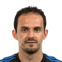
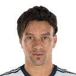
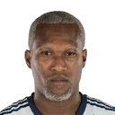
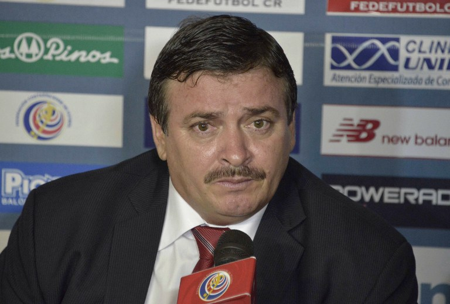

COSTA RICA
La Selección de Fútbol de Costa Rica es el equipo representativo de dicho país en las competiciones oficiales. En su cuarto Mundial en Brasil 2014, los Ticos tuvieron su mejor desempeño, alcanzando los cuartos de final, siendo eliminados por Países Bajos en la tanda de penaltis, retirándose del Mundial invictos.

Ureña
Campbell
Ruíz

Borges

Bolaños

Waston

Gamboa

Oviedo
Duarte

Calvo

Navas

Conocido deportivamente como Óscar Ramírez (AFI: ó'skař řa'mireθ), es un exfutbolista y entrenador costarricense. Actualmente dirige a la Selección de Costa Rica. Antes de ejercer su profesión, recibió cursos por parte de la Universidad Nacional (UNA), de la Universidad Estatal a Distancia (UNED) y mediante un congreso en Pachuca ubicado en México.
| Jugadores disponibles | Jugadores disponibles | |
|---|---|---|
Jens Lehman, Oliver Kahn, Torsten Frings, Michael Ballack, Per Mertesacker, Christoph Metzelder, Alexander Madlung, Jan Schlaudraff, Stefan Kiessling, Christian Schulz, Arne Friedrich, Mike Hanke,Tim Borowski |
Jens Lehman, Oliver Kahn, Torsten Frings, Michael Ballack, Per Mertesacker, Christoph Metzelder, Alexander Madlung, Jan Schlaudraff, Stefan Kiessling, Christian Schulz, Arne Friedrich, Mike Hanke,Tim Borowski |